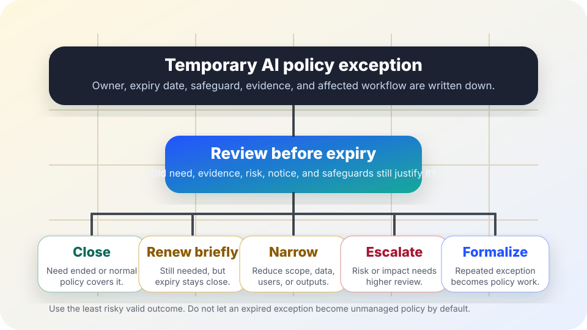

AI governance before exceptions drift
AI policy exception review.
A practical review for deciding whether a temporary AI policy exception should close, renew briefly, narrow, escalate, or become formal policy before the workaround quietly becomes the rule.
The short answer
An AI policy exception is a written, time-limited permission to do something outside the normal AI policy. It should have an owner, expiry date, scope, safeguard, evidence requirement, and review date. At review, choose one clear outcome: close it, renew briefly, narrow it, escalate it, or formalize it through normal policy change.
The safest default is not “keep going.” The safest default is to ask whether the exception is still necessary, whether harms or complaints appeared, whether affected people were told enough, and whether repeated exceptions reveal that the underlying policy needs repair.

Why exception review matters
NIST’s AI Risk Management Framework describes AI risk management as continuous governance, mapping, measuring, and managing rather than a one-time approval. OMB Memorandum M-24-10 requires federal agencies to govern AI uses, manage risks, monitor impacts, and maintain accountable oversight for covered AI activity. CISA’s Secure by Design guidance reinforces the habit of building accountability and safety into systems rather than treating safeguards as optional afterthoughts.
For civic teams, an exception is often where real policy stress appears first: a staff member needs a faster workflow, a vendor feature changes, a public deadline is urgent, or the old rule blocks a genuinely useful low-risk use. The answer may be flexibility. But flexibility without expiry, evidence, and review can become unmanaged expansion.
Five possible outcomes
| Decision | Use when | Minimum record |
|---|---|---|
| Close | The need ended, the workflow stopped, the normal policy now covers the case, or the exception produced too little value. | Closure date, owner, reason, retained evidence location, and any cleanup tasks. |
| Renew briefly | The need remains, evidence is acceptable, safeguards are working, and a short extension is safer than a rushed policy change. | New expiry date, evidence summary, unchanged or improved safeguards, and next review date. |
| Narrow | The exception is useful only for a smaller set of users, data, outputs, cases, or time periods. | New scope, removed uses, updated notice or script, and owner signoff. |
| Escalate | Rights, safety, privacy, accessibility, security, procurement, records, labor, or public-trust risks exceed the original approval path. | Escalation route, pause decision, evidence packet, affected stakeholders, and unresolved questions. |
| Formalize | Repeated exceptions show that the standing policy should change for a recurring, well-evidenced, appropriately safeguarded use. | Policy-change proposal, public or internal notice plan, review evidence, and implementation owner. |
Before the review meeting
Confirm the facts
Find the original exception request, scope, owner, expiry date, approval path, affected workflow, and promised safeguards.
Collect local evidence
Use actual examples, incident notes, quality checks, user feedback, access logs, cost/time data, and appeal or correction records.
Check public-facing language
Review notices, consent language, staff scripts, help pages, and records descriptions if the exception affects people outside the team.
Look for policy stress
Ask whether repeated requests mean the policy is unclear, too broad, too narrow, outdated, or missing a safe standard path.
Review questions
- Is the exception still necessary, or can the team return to the normal policy now?
- Did the exception stay inside the approved scope, users, data, systems, time period, and use case?
- What benefits were actually observed, and what evidence supports those claims?
- What incidents, errors, complaints, appeals, accessibility barriers, privacy concerns, or records issues appeared?
- Were affected people told enough to understand AI involvement, human review, correction options, and contact paths?
- Do safeguards still match the current workflow, vendor behavior, model version, integrations, and data flow?
- Would renewal create a pattern that should be handled through normal policy change instead?
- Who can pause or end the exception if new harm appears before the next review?
Copy-paste exception review note
Keep public copies free of secrets, personal data, private logs, credentials, vendor-confidential details, and sensitive case facts. Link to restricted evidence repositories when needed.
Stop rules
- Do not renew an expired exception when no owner can explain what changed, what evidence was reviewed, or who can pause it.
- Do not use an exception to bypass public notice, accessibility, language access, records retention, procurement, privacy, or security duties.
- Escalate when an exception touches eligibility, discipline, benefits, housing, employment, health, education, safety, law enforcement, or other high-impact contexts.
- Formalize repeated low-risk exceptions through a transparent policy update instead of renewing the same workaround indefinitely.
- Do close exceptions clearly. A visible closure record helps future reviewers avoid rediscovering the same risk.
Related field-guide pages
Sources
- NIST — AI Risk Management Framework, used here for the idea that AI governance, mapping, measurement, and management are continuous practices.
- Office of Management and Budget — Memorandum M-24-10, Advancing Governance, Innovation, and Risk Management for Agency Use of Artificial Intelligence, used here for governance, risk-management, monitoring, and accountability expectations for federal agency AI uses.
- CISA — Secure by Design, used here for the operational principle that safety and accountability should be built into system practice rather than treated as optional add-ons.
This guide is public education, not legal, security, procurement, labor, or compliance advice. Local law, contracts, collective bargaining agreements, public-records rules, accessibility duties, and privacy obligations may require stronger review.